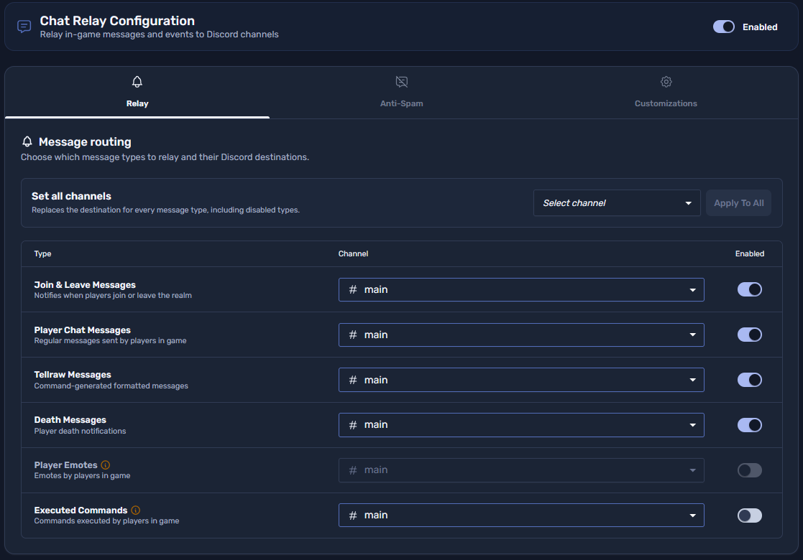
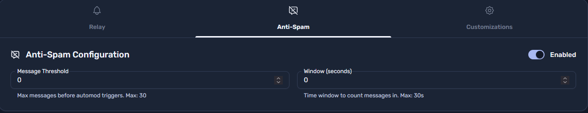
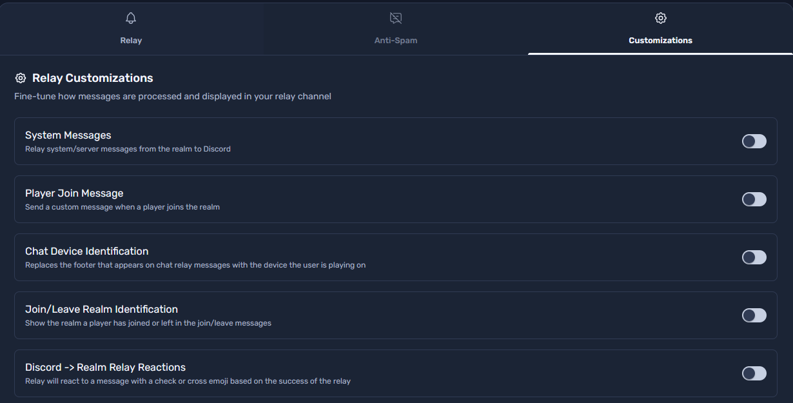
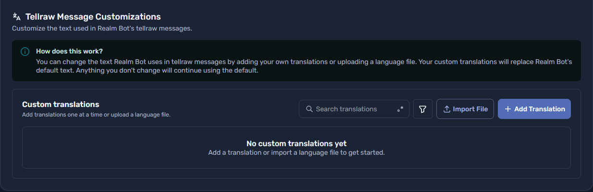

Chat Relay

Chat Relay connects Minecraft Bedrock Realm chat with Discord. Players can send messages in either direction.
What Chat Relay Relays
Choose which Realm events to send to Discord:
- Player Join and Leave Messages - connection notices, with optional platform and Realm identification under
Relay Customizations . - Player Chat Messages - standard chat messages sent by players in-game.
- Tellraw Messages - formatted messages generated by commands, announcements, or scripts.
- Death Messages - player death notifications for gameplay visibility and moderation review
- Player Emotes - player emotes performed in-game (useful for social visibility and activity context)
- Executed Commands - player commands executed in-game
- Connection Notices - configurable connection messages and disconnection warnings, enabled under
Relay Customizations
Note: Chat Relay is a communications utility. It does not independently "secure" or "protect" a Realm. All relayed content remains subject to your Realm rules and Discord policies.
Discord-to-Realm Messages
Messages sent in the configured player-chat channel can also be forwarded into the Realm. The sender's Discord display name and message are included in the in-game output.
- Users who can send messages in the relay channel may be able to communicate with players in the Realm.
- Message attachments are not forwarded; send important text as part of the message body.
- Realm Bot's slash-command role permissions do not secure ordinary messages posted in this channel.
Restrict the relay channel to the intended community or staff audience and apply normal Discord moderation controls.
Leveling System Integration
In-game chat activity can contribute to the Leveling System alongside time spent online.
When Leveling is enabled and the Realm connection is operational:
- An eligible player message awards between 15 and 25 XP.
- A player can receive chat XP at most once per minute.
- The Relay Account does not receive XP.
- Accumulated XP contributes to the player's level, rank, and leaderboard position.
The Chat Relay output toggle does not independently govern Leveling XP. The Leveling System must be enabled and Realm Bot must be receiving the Realm's live chat events through a connected Relay Account.
Important: Chat XP is designed to recognise normal participation, not encourage spam. Chat Relay Anti-Spam controls, Realm moderation rules, and Discord policies still apply.
Requirements
- A Realm connected to Realm Bot via the authorised account-linking flow
- An active Realm Bot Premium subscription
- A Relay Account connected to and present in the Realm
- A Discord destination channel for each enabled message category
- A working Realm Bot GameTest Pack when relaying player emotes
Chat Relay may temporarily stop during Realm disconnections or Microsoft/Xbox authentication failures. See Relay Account and GameTest Dependencies for dependency guidance.
How to Set Up
- Open the Chat Relay module inside the Realm Bot Dashboard.

- Enable Chat Relay using the main toggle.
- Under the Relay tab, configure which messages are sent to Discord.
- Under Message routing, select a Discord channel for each message type. Use Set all channels to assign the same channel to every message type.
- Enable the message types you want to relay:
- Join & Leave Messages – Player join and leave notifications.
- Player Chat Messages – Regular in-game chat messages.
- Tellraw Messages – Command-generated formatted messages.
- Death Messages – Player death notifications.
- Player Emotes – Emotes performed by players.
- Executed Commands – Commands executed by players.
- Optionally configure
Anti-Spam andCustomizations using their respective tabs. - Optionally select a Fun Mode to change how player chat messages are presented.
Anti-Spam Configuration

Set two values to limit repeated player chat:
- Message Threshold - the maximum number of messages allowed before the system triggers
- Window (seconds) - the time window used to count messages
For example, a threshold of 10 and a window of 10 seconds allow ten messages within that window. An eleventh exceeds the threshold.
When the threshold is exceeded, the affected player is removed from the Realm and the action is logged. Players on the Realm Bot allowlist are exempt from this anti-spam action.
Operational guidance:
- Start conservative for public communities (e.g., 10-15 messages in 10-15 seconds)
- Increase thresholds for high-volume servers where relay spam is expected during events
- Pair anti-spam with Discord slowmode if your relay channel is public-facing
Important: Setting threshold/window to extremely low values can suppress legitimate activity. Tune this gradually based on real traffic.
Relay Customizations

Use Chat Relay > Customizations > Relay Customizations for the selected Realm to control how messages are displayed and handled between Discord and Minecraft. Each setting can be enabled independently.
- System Messages - Send Realm Bot connection notices to Discord, including when the relay connects or disconnects.
- Player Join Message - Sends a custom in-game message when a player joins the Realm.
- Chat Device Identification - Replace the default footer on Discord chat messages with the device the player is using.
- Join/Leave Realm Identification - Include the Realm name in join and leave notifications, helping distinguish activity across multiple Realms.
- Discord -> Realm Relay Reactions - React to Discord messages with a check or cross emoji depending on whether the message was successfully relayed into the Realm.
These options do not enable or disable individual message categories. Use Chat Relay > Relay > Message routing to configure which messages are sent to Discord and their destination channels.
Tellraw Translations

Use Chat Relay > Customizations > Tellraw Message Customizations for the selected Realm to change how Tellraw translation keys appear in Discord. This does not translate ordinary chat or change a player's game language. Chat Relay must be operational, with Tellraw Messages enabled and a Discord destination selected.
- Add translation: Enter the key used by the Minecraft message and the text to display in Discord. For example, the language-file entry
myrealm.welcome=Welcome back, %s!only affects messages that usemyrealm.welcome. - Import file: Select a
.lang,.mcpackor.zipfile. For a pack, select one of itstexts/*.langfiles, then choose Import language. The languages available depend on the pack.
Manual entries override imports, and custom entries override bundled English. Removing an override restores the next available translation. If the top-level key is unknown, Discord displays its identifier.
If an entry is rejected, check for a duplicate manual key. If another session saved changes first, reload the dictionary before editing again.
Fun Mode
Fun Mode changes how relayed player-chat messages are presented in Discord. Available modes are:
- Normal - relays the message without a themed transformation
- UwU - applies an UwU-style transformation
- Pirate - applies a pirate-style transformation
Use Normal for moderation or archival channels where preserving the original wording is important.
Recommended Configuration
- Use a dedicated channel such as
#realm-chat,#chat-relay, or#realm-live. - Enable only the message types you actually need:
- Public communities: Player Chat + (optional) Death Messages + (optional) Emotes
- Staff operations: Player Chat + Tellraw (systems/events), usually without Emotes
- Enable Anti-Spam if your Realm experiences bursts of activity or repeated disruption attempts.
- Treat the relay channel as an extension of in-game chat; enforce the same rules.
Discord Permissions
Realm Bot must have these permissions in the destination channel:
- View Channel
- Send Messages
- Read Message History
- Embed Links
If relay output does not appear, channel permissions should be the first thing verified.
Discord users also need Send Messages in the player-chat destination to send messages into the Realm. Grant that permission only to the intended audience.
Troubleshooting
Nothing is relaying
Check the following in order:
- Chat Relay is enabled for the correct Realm
- A destination channel is selected for the affected message category
- Realm Bot has View Channel + Send Messages permission
- The Relay Account is online and connected to the correct Realm
- For messages sent from Discord to the Realm, Cheats are enabled in the Realm settings
Relay is too noisy
- Enable Anti-Spam with a moderate threshold/window
- Consider Discord slowmode
- Restrict who can speak in the relay channel (if Discord -> Realm relaying is enabled in your setup)
Messages appear delayed or inconsistent
- Confirm the Realm is stable and the relay account/session is not disconnecting
- Ensure the anti-spam threshold is not suppressing legitimate output during normal use
- Reconnect the Microsoft/Xbox account if its authentication has expired
Discord messages do not reach the Realm
- Confirm the message is being sent in the configured player-chat destination.
- Confirm the Relay Account is online.
- Check that the message contains text; attachments alone are not forwarded.
- Confirm the Discord user has permission to send messages in the channel.